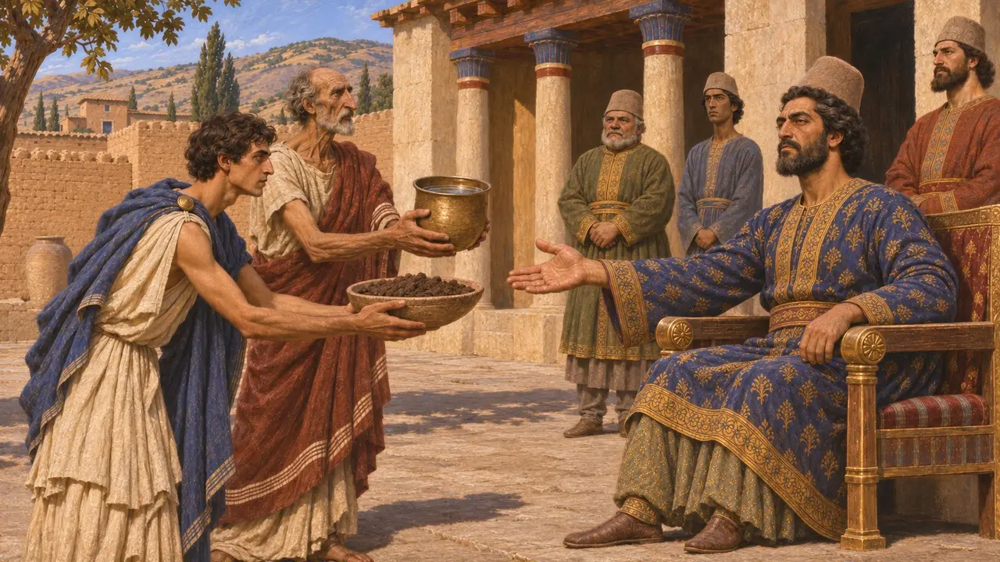
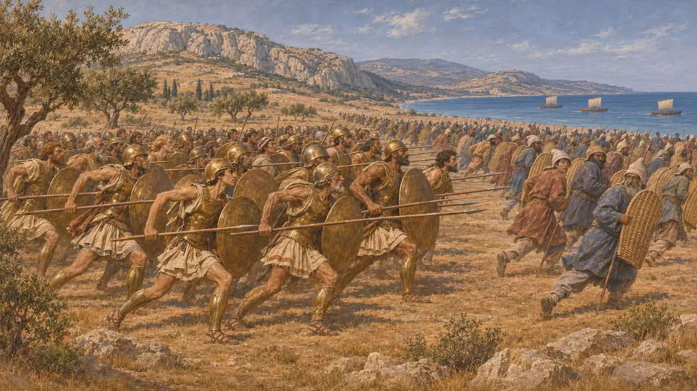
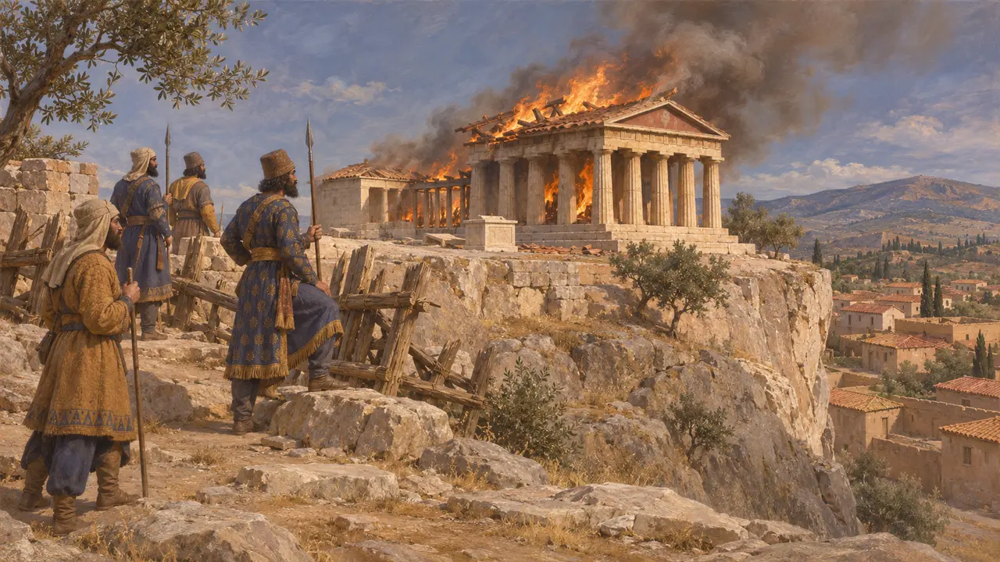
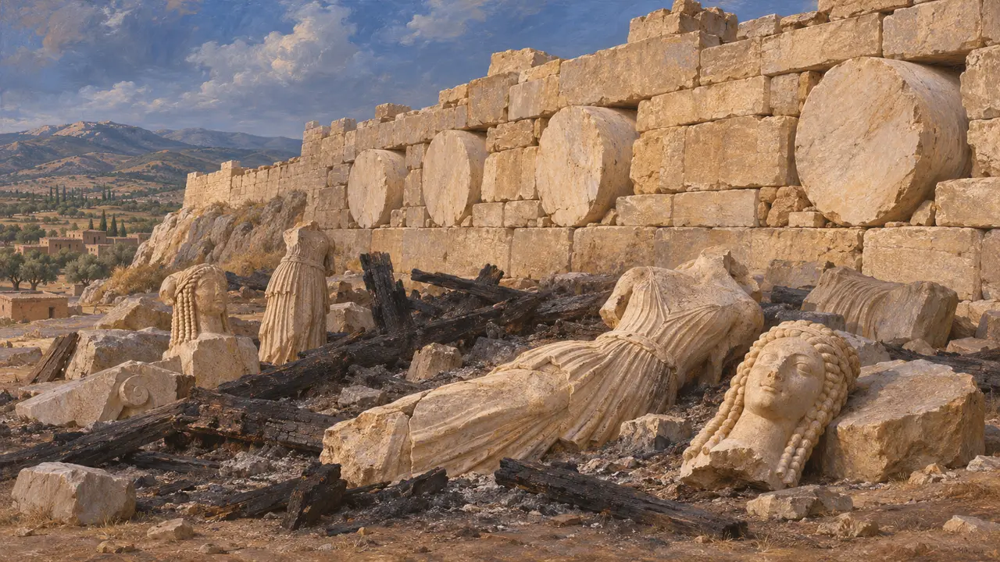
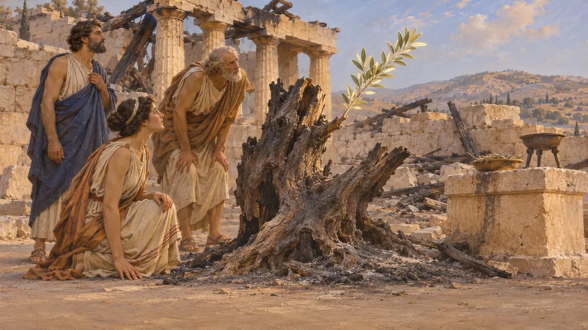

Atene
Città greca dell'Attica, incendiata dagli eserciti persiani nel 480 e nel 479 a.C.
Nel gioco: Livello 4: La Terrazza, Livello 7: Sardi brucia, Livello 8: La baia di Maratona, Livello 10: Le Porte Calde, Livello 11: Il finale
Atene era la città principale dell'Attica, retta a democrazia dopo le riforme di Clistene intorno al 508 a.C., con i suoi santuari sulla rocca dell'Acropoli. Le sue truppe si unirono ai ribelli ioni nell'incendio di Sardi nel 498 a.C. e sconfissero la forza di sbarco persiana a Maratona nel 490 a.C.; Serse e poi Mardonio la diedero alle fiamme nel 480 a.C. e nel 479 a.C. Per gli scrittori greci il suo saccheggio e la sua rinascita divennero il fulcro del racconto delle guerre persiane.
Nel gioco: La cronaca presenta Atene come la città dell'Acropoli che contribuì a incendiare Sardi, vinse a Maratona e fu data alle fiamme da Serse nel 480 a.C. e da Mardonio nel 479 a.C. Ciò concorda con Erodoto.

Terra e acqua a Sardi
ContesoErodoto racconta che verso il 507 a.C. alcuni inviati ateniesi, in cerca di aiuto contro Sparta, diedero terra e acqua al satrapo Artaferne a Sardi, e in patria furono biasimati per questo (5.73). In seguito Artaferne intimò ad Atene di riaccogliere il tiranno esule Ippia, e la città rifiutò (5.96). Gli storici discutono se la Persia considerasse allora Atene un suddito che aveva tradito la parola data. In tal caso, le campagne successive furono la punizione di ribelli più che una nuova conquista.
Herodotus 5.73, 5.96; P. Briant, From Cyrus to Alexander, 2002

Sardi e Maratona
Racconto anticoErodoto narra che Aristagora di Mileto convinse gli Ateniesi, che inviarono venti navi alla rivolta ionica. Con gli Eretriesi marciarono su Sardi nel 498 a.C., e la città bassa con il suo tempio di Cibebe andò a fuoco (5.97-102). Nel 490 a.C. le forze di Dati e di Artaferne il giovane sbarcarono a Maratona con Ippia come guida, e gli Ateniesi e i Plateesi le sconfissero (6.102-117). Erodoto conta 6.400 caduti persiani e 192 ateniesi.
Herodotus 5.97-102, 6.102-117

Due incendi, 480 a.C. e 479 a.C.
Racconto anticoErodoto racconta che la maggior parte degli Ateniesi partì per Trezene, Egina e Salamina prima dell'arrivo di Serse nel 480 a.C. (8.41). Pochi rimasero a difendere l'Acropoli dietro una barricata di legno. I Persiani allora scalarono il versante scosceso presso il sacello di Aglauro, uccisero i difensori e incendiarono il santuario (8.51-53). Mardonio rioccupò la città deserta nel 479 a.C. e offrì condizioni di pace, che furono respinte. Partendo per la Beozia, diede alle fiamme ciò che era ancora in piedi (9.3-13).
Herodotus 8.41, 8.51-55, 9.3-13

Che cosa mostra il terreno
Nelle fontiGli scavi sull'Acropoli hanno portato alla luce depositi di detriti bruciati, statue spezzate e korai di marmo. A lungo furono interpretati come macerie sepolte dagli Ateniesi quando sgomberarono la rocca dopo il 479 a.C., anche se oggi alcuni studiosi ritengono che gli interramenti siano avvenuti in un arco di tempo più lungo. I rocchi di colonna dell'incompiuto Pre-Partenone furono inglobati nel muro settentrionale della cittadella, dove sono ancora visibili. Le iscrizioni reali persiane non nominano Atene.
J. M. Hurwit, The Athenian Acropolis, 1999

La freccia e l'ulivo
Leggenda posterioreErodoto narra che Dario, saputo di Sardi, scoccò una freccia verso il cielo e pregò di poter punire gli Ateniesi. Poi incaricò un servo di ricordarglieli tre volte a ogni cena (5.105). Erodoto racconta anche che, il giorno dopo l'incendio, gli Ateniesi mandati da Serse a sacrificare trovarono l'ulivo sacro di Atena con un nuovo germoglio lungo un cubito (8.55). Sono entrambi racconti morali di vendetta e di sopravvivenza, non resoconti storici.
Herodotus 5.105, 8.55
Fonti
- Herodotus 5.73-105
- Herodotus 6.94-120
- Herodotus 8.41-55, 9.1-13
- J. M. Hurwit, The Athenian Acropolis, 1999
- P. Briant, From Cyrus to Alexander, 2002